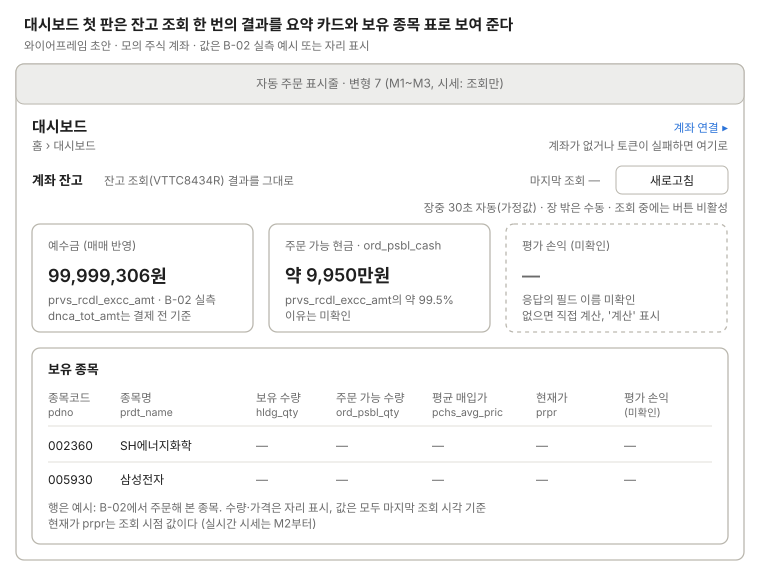

대시보드 (첫 판)
KIS 잔고 조회(VTTC8434R)를 그대로 보여 준다.

위에 예수금·주문 가능 현금·평가 손익(미확인) 카드, 아래에 보유 종목 표가 오고, 값은 모두 마지막 조회 시각 기준이고 자동 새로고침은 호출 한도 때문에 느리게 둔다.
자동 새로고침은 장중 30초(가정값), 장 밖에서는 수동이다(결정 2026-10-16). 조회 중에는 새로고침 버튼을 끈다. 예수금 카드는 매매가 바로 반영되는 prvs_rcdl_excc_amt를 보이고, dnca_tot_amt는 결제 전 기준이라고 적는다(B-02 9g).
쓰는 공통 UI
화면 틀 · 자동 주문 표시줄 (변형 7, "시세: 조회만")
상태
| 상태 | 보일 것 |
|---|---|
| 불러오는 중 | 카드·표 자리에 빈 틀, 새로고침 버튼 비활성 |
| 조회 실패: 초당 한도 | EGW00201. 직전 값을 두고 "오래된 값"으로 표시, 다음 주기에 다시 조회 |
| 조회 실패: 토큰 발급 실패 | 안내 문구 + "계좌 연결 ▸" 버튼 |
| 오래된 값 | 실패 뒤 직전 값을 보일 때 "마지막 조회 시각 · 오래된 값" |
| 계좌 없음 | 카드·표 대신 "등록된 계좌가 없습니다" + "계좌 연결 ▸" 버튼 |
| 보유 종목 없음 | 빈 표에 "보유 종목이 없습니다" |
| 장 밖 | 자동 새로고침 멈춤, "장 밖 · 수동 새로고침". 값은 마지막 조회 기준 |
| 평가 손익 필드 없음 | (현재가 − 평균 매입가) × 보유 수량을 계산해 "계산" 표시(제안) |
화면 규칙
- 보여 줄 것: 예수금
prvs_rcdl_excc_amt, 주문 가능 현금ord_psbl_cash, 보유 종목 표(pdno,prdt_name,hldg_qty,ord_psbl_qty,pchs_avg_pric,prpr) - 미확인: 평가 손익 필드 이름
- 주의:
ord_psbl_cash는prvs_rcdl_excc_amt의 약 99.5%이고 이유는 모른다. 모의 호출 한도가 초당 2건이라 자동 새로고침은 장중 30초(가정값), 장 밖은 수동이다. dnca_tot_amt는 결제 전 기준이라 카드에 쓰지 않는다